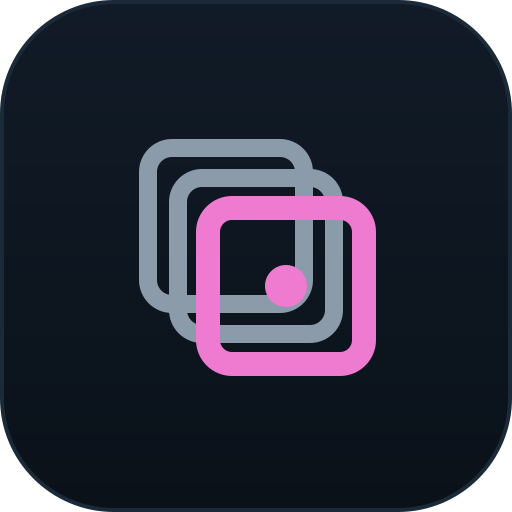

SubStation watches the folder where a telescope's subs land, calibrates and grades each one as it arrives, and stacks finished datasets into masters. These guidelines cover the logo, colour, type, verdict system, components and voice. Use the switch at the top right to view every section in dark, light or night-vision mode.
Shared with SQMeter
Dark neutral foundation, Inter and JetBrains Mono, gradient cards, hairlines, uppercase labels, monospaced readouts, outlined buttons, WCAG AA, a calm plain-English voice.
SubStation's own
Orchid accent, the converging-frames mark, night-vision mode, a seven-state verdict system, and review components: blink viewer, night charts, sub thumbnails.
01 · Logo concepts
Three directions
All three are drawn on a 24-unit grid with 2-unit strokes, 2-unit corner radii and round caps, the same construction rules assumed for SQMeter's mark. Each is tested at 96, 24 and 16 px.
A · ConvergeChosen
Offset frames arrive and register into one sharp frame, with a single star as the registration point. It describes stacking directly and reads as a document or frame, not as sky.
Holds at 16 px with a two-frame simplification. Rectangular, so it contrasts with a circular sky-measurement mark.
B · Reticle
A viewfinder bracket with registration ticks around a star. Speaks to inspection and review.
Not chosen: a reticle sits close to sky-measurement territory and generic camera icons, and says nothing about stacking.
C · Platform S
A squared S resting on a station platform line. The pun made literal.
Not chosen: letter monograms are common in developer tooling, and the platform line can read as an underline or a terminal prompt.
02 · The mark
Converge
Two incoming frames in a neutral tone, one registered frame and its star in the accent. The accent appears only on the front frame and the star.
Construction
Grid
24 × 24
Frames
13 × 13, r 2
Offset
2.5 diagonal
Stroke
1.5 back · 2 front
Star
r 1.75, frame centre
16 px
two frames, own file
Wordmark
SubStation
Inter Semibold, −0.02em tracking, camel-case S. Always one word. Outline the text before exporting production SVGs.
Horizontal
SubStation
Stacked
SubStation
Variants
SubStation
Full colour · primary
SubStation
Single colour · on dark
SubStation
Inverted · on light
SubStation
Single colour · on light
SubStation
Night vision · red only
Clear space
¼¼
Keep a quarter of the mark's height clear on every side. In lockups, the gap between mark and wordmark is a third of the mark's height.
Minimum size
mark 16 px
SubStation
horizontal 96 px wide
SubStation
stacked 64 px
Below 24 px, use favicon-16.svg, which drops the rear frame.
03 · Family
SQMeter and SubStation side by side
Drop the SQMeter SVG into the left slot to check the pairing. The SubStation mark assumes SQMeter uses a 24-unit grid, 2-unit strokes and 2-unit radii; adjust the stroke values if the real mark differs.
SQMeter
#55c7f2 · measures the sky
SubStation
#ee7bd0 · processes the frames
Siblings
Same grid, stroke weight, corner radius and level of detail. Same wordmark typeface and tracking. One neutral and one accent in each mark.
Not twins
SubStation is rectilinear and layered; its subject is the frame, not the sky. Different accent hue, 120° away from SQMeter's cyan.
Together
When both appear, each keeps its own accent. Separate them by at least one mark width and align on the wordmark baseline.
04 · Favicon and app icon
Small sizes and app stores
Favicon · actual size and 4×
16
32
48
The 16 px file is redrawn on a 16-unit grid with one rear frame. All three sit on a dark tile so they hold on light browser tabs.
App icon · 512

Gradient tile in panel colours with a hairline edge. Export 512 PNG for Unraid, TrueNAS and Synology listings and the Docker Hub icon; corner radius is 22% so platform masks crop it cleanly.
05 · Colour
Choosing the accent
SQMeter's palette already occupies cyan (196°), violet (255°), green (150°), amber (40°) and red (3°). The two widest free arcs sit around 310° and 95°. Three candidates were tested against the full family palette.
#ee7bd0316°
OrchidRecommended
7.77:1 on bg. 61° from violet, 47° from red. Warm against SQMeter's cool cyan, so the two products read as a pair of opposites. Never confused with a status.
#c6e46b75°
Phosphor
13.65:1 on bg. Instrument-like, but it sits between amber and green, so a primary button reads as "accept". Rejected for a grading product.
#8da2ff229°
Periwinkle
8.11:1 on bg. Squeezed between cyan and violet; next to SQMeter it looks like a recolour. Rejected.
Tokens
Same names and structure as SQMeter, with the --sst- prefix. Ratios are against --sst-bg and the lowest-contrast panel. Every text token passes AA (4.5:1). Source: design-system/substation-tokens.css.
{{ set.name }}
{{ r.t }} {{ r.hex }}{{ r.c }}
Night vision keeps the red channel only: no token has more than 23% green or blue. It is still AA, but lower screen brightness to taste in the field. Status tokens collapse to one red, so verdicts rely on shape.
06 · Typography
Inter for words, JetBrains Mono for data
hero · mono 96/1412
readout · mono 48/12.14″
h1 · 36/1.15 · 600M 101, Hα, three nights
h2 · 24/1.25 · 600Quality across the night
h3 · 18/1.35 · 600Calibration library
body · 15/1.55 · 400SubStation matched 78 subs to darks and flats from 6 October. Two are waiting for a dark at −10 °C.
small · 13/1.45 · 400Last sub arrived 4 minutes ago
Three grades for subs, four states for datasets and masters. Each has a distinct silhouette and glyph, so colour is a third cue, not the only one. Filled shapes are final decisions; outlined shapes are states that will change.
Thumbnails are auto-stretched previews on --sst-thumb. The selected sub takes an accent border. The verdict icon sits on a bg-coloured disc so it reads over any image.
sub preview · auto-stretchedM101_Ha_300s_0045.fits01:55:12
Verdict
Rejected
Star count 41% of the night median: likely cloud.
Background 38% above median in the same sub. Five neighbouring subs show the same pattern.
FWHM
2.31″
Stars
{{ blinkStars }} / {{ medStars }}
Background
571 ADU
Eccentricity
0.41
Override
{{ k.k }}{{ k.l }}
10 · Docs theme
MkDocs Material override
Three palette schemes map the --sst-* tokens onto Material's --md-* variables, in the same structure as SQMeter's docs. File: design-system/mkdocs/stylesheets/substation.css.
SubStation docsSearch
HomeInstallGradingReference
RequirementsDocker ComposeUnraidSynologyFirst night
Docker Compose
Point SubStation at the folder your capture software writes to. See watched folders for NINA and Ekos naming.
SubStation watches your capture folder, calibrates and grades each sub as it lands, and stacks finished datasets into masters. Free, open source and self-hosted.
docker run -v /astro:/data ghcr.io/substation/substation
Last night · M 101 Hα
65/78
subs accepted · 5 down-weighted · 5 h 50 m stacked
0045.fits rejected. Star count 41% of the night median: likely cloud.
Headline options
Every sub graded. Every decision explained.(recommended)
From the camera folder to a finished master.
Your subs, sorted by morning.
Tagline options
Calibrate, grade and stack your subs as they land.
A self-hosted station for your subs: they arrive, get checked, and leave as a master.
Quiet, careful processing for astrophotography, on your own hardware.
GitHub social preview · 1280 × 640 · assets/social/substation-social-1280x640.svg
Write like a careful observing partner. State the measurement, compare it to something the user knows, then give the likely cause. British spelling. No exclamation marks, no hype, no "AI-powered", no "smart".